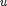
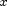

congp.m
Summary: Implements the mean-of-GP policy (equivalent to a regularized RBF network. Compute mean, variance and input-output covariance of the control  using a mean-of-GP policy function, when the input  is Gaussian. The GP is parameterized using a pseudo training set size N. Optionally, compute partial derivatives wrt the input parameters.
This version sets the signal variance to 1, the noise to 0.01 and their respective lengthscales to zero. This results in only the lengthscales, inputs, and outputs being trained.
function [M, S, C, dMdm, dSdm, dCdm, dMds, dSds, dCds, dMdp, dSdp, dCdp] ... = congp(policy, m, s)
Input arguments:
policy policy (struct) .p parameters that are modified during training .hyp GP-log hyperparameters (Ph = (d+2)*D) [ Ph ] .inputs policy pseudo inputs [ N x d ] .targets policy pseudo targets [ N x D ] m mean of state distribution [ d x 1 ] s covariance matrix of state distribution [ d x d ]
Output arguments:
M mean of the predicted control [ D x 1 ] S covariance of predicted control [ D x D ] C inv(s)*covariance between input and control [ d x D ] dMdm deriv. of mean control wrt mean of state [ D x d ] dSdm deriv. of control variance wrt mean of state [D*D x d ] dCdm deriv. of covariance wrt mean of state [d*D x d ] dMds deriv. of mean control wrt variance [ D x d*d] dSds deriv. of control variance wrt variance [D*D x d*d] dCds deriv. of covariance wrt variance [d*D x d*d] dMdp deriv. of mean control wrt GP hyper-parameters [ D x P ] dSdp deriv. of control variance wrt GP hyper-parameters [D*D x P ] dCdp deriv. of covariance wrt GP hyper-parameters [d*D x P ]
where P = (d+2)*D + n*(d+D) is the total number of policy parameters.
Copyright (C) 2008-2013 by Marc Deisenroth, Andrew McHutchon, Joe Hall, and Carl Edward Rasmussen.
Last modified: 2013-01-24
Contents
High-Level Steps
- Extract policy parameters from policy structure
- Compute predicted control u inv(s)*covariance between input and control
- Set derivatives of non-free parameters to zero
- Merge derivatives
function [M, S, C, dMdm, dSdm, dCdm, dMds, dSds, dCds, dMdp, dSdp, dCdp] ... = congp(policy, m, s)
Code
% 1. Extract policy parameters policy.hyp = policy.p.hyp; policy.inputs = policy.p.inputs; policy.targets = policy.p.targets; % fix policy signal and the noise variance % (avoids some potential numerical problems) policy.hyp(end-1,:) = log(1); % set signal variance to 1 policy.hyp(end,:) = log(0.01); % set noise standard dev to 0.01 % 2. Compute predicted control u inv(s)*covariance between input and control if nargout < 4 % if no derivatives are required [M, S, C] = gp2(policy, m, s); else % else compute derivatives too [M, S, C, dMdm, dSdm, dCdm, dMds, dSds, dCds, dMdi, dSdi, dCdi, dMdt, ... dSdt, dCdt, dMdh, dSdh, dCdh] = gp2d(policy, m, s); % 3. Set derivatives of non-free parameters to zero: signal and noise variance d = size(policy.inputs,2); d2 = size(policy.hyp,1); dimU = size(policy.targets,2); sidx = bsxfun(@plus,(d+1:d2)',(0:dimU-1)*d2); dMdh(:,sidx(:)) = 0; dSdh(:,sidx(:)) = 0; dCdh(:,sidx(:)) = 0; % 4. Merge derivatives dMdp = [dMdh dMdi dMdt]; dSdp = [dSdh dSdi dSdt]; dCdp = [dCdh dCdi dCdt]; end